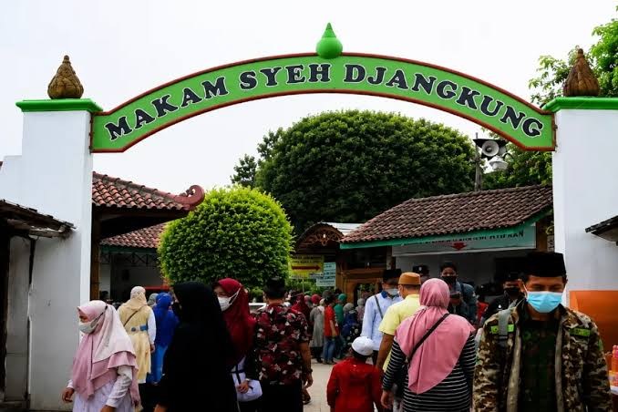
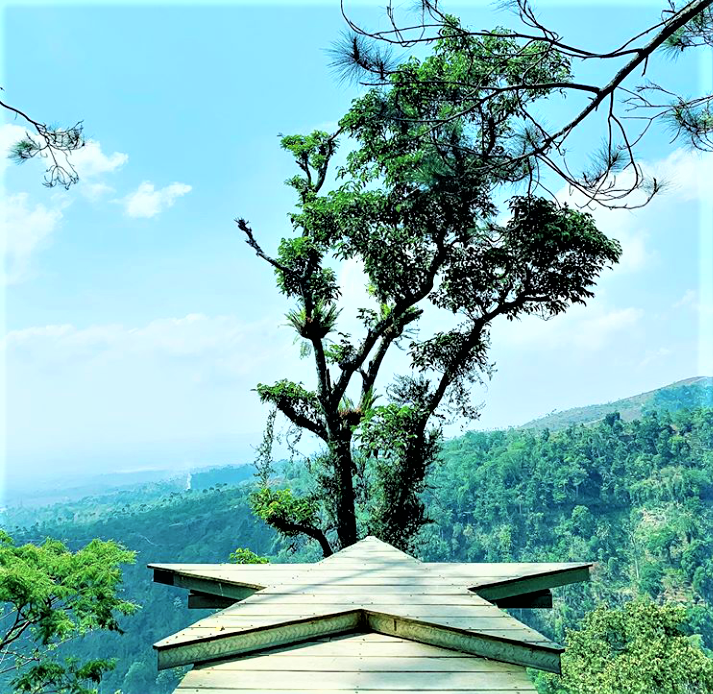

Jelajahi Pati
Beberapa tempat menarik yang bisa kamu kunjungi.
Waduk Gunung Rowo
📍 Kabupaten Pati
Wisata Alam
Nasi Gandul
📍 Kabupaten Pati
Kuliner Khas
Makam Syekh Jangkung
📍 Kayen, Pati
Wisata Budaya
Hutan Pinus Pangonan
📍 Tlogowungu, Pati
Wisata Alam